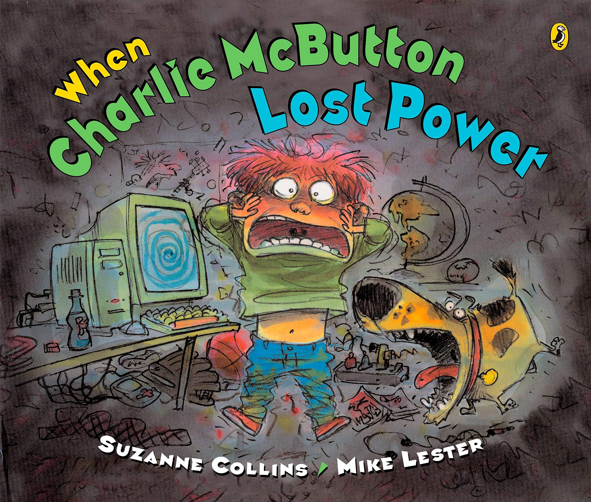

WHEN CHARLIE MCBUTTON LOST POWER

"A clever, humorous story in rhyme. Charlie's techno-driven world comes to a crashing halt when a thunderstorm causes a power outage. His mother advises, "You'll have to find something without plugs to play./Read a book!/Clean your room!/Sing a song!/Model clay!" Uninspired, Charlie finally remembers an old handheld video game, but the battery is missing. Desperate, he steals one from his sister's talking doll and ends up in the time-out chair. Feeling remorseful when the little girl starts crying, he seeks her out and the two have a grand time playing games and pretending to be dragons and wizards. When the power returns, Charlie is ready to retreat to his "handsets and bots" but decides that it might be fun to spend some time with his sister as well. The hilarious cartoon illustrations are bold and appealing and depict the siblings' many emotions with exaggerated clarity. While the mother appears only as a hand patting her panicked son's head, the family dog is usually present, patiently enduring a hose-down from little Isabel Jane or angrily reproving Charlie for hurting her feelings. Pair this tale with Glenn McCoy's Penny Lee and Her TV (Hyperion, 2002) for a fun storytime during 'TV Turnoff Week.'"
--School Library Journal
"Charlie loves computer games so much, he never plays with anything else - so when the power goes out, he's really in the dark. His desperate search for batteries involves his sister's toys and some nasty behavior before he settles down to realize what's truly important in his life. Deftly written by Suzanne Collins and nicely illustrated by Mike Lester, When Charlie McButton Lost Power is refreshingly original and moving!"
--Midwest Book Review
"A computer-game addict temporarily turns into a raving lunatic when a power failure shuts down his PC, and Lester is well up to the task of portraying his breakdown. He sends red-haired Charlie, pop-eyed features wildly distorted with panic, dashing after an old gameboy, then brutalizing his little sister Isabel Jane's talking doll for a triple-A battery. When this behavior instantly relegates him to the Time-Out Chair, Charlie yells (captured in the art by a gross-looking spray of red and yellow) at Isabel Jane, which sends her away in tears—but then also causes him to reflect remorsefully on how much he actually enjoys her company. Once off the chair, he seeks her out for a game of hide-and-seek. Collins tells the tale in loosely written verse and leaves Charlie, as the house explodes with restored light, thinking that he might go play with his sibling some more before plugging in again. Unlikely to work as behavior modification, but young geeks may take a break from their screens to enjoy the over-the-top art."
--Kirkus Reviews